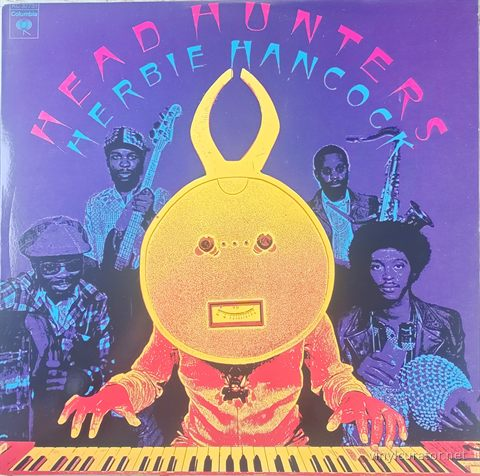
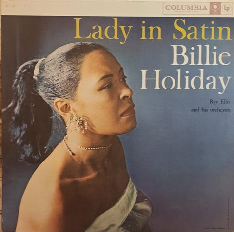
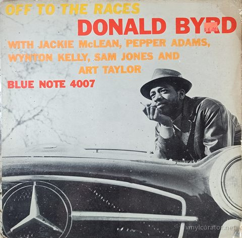
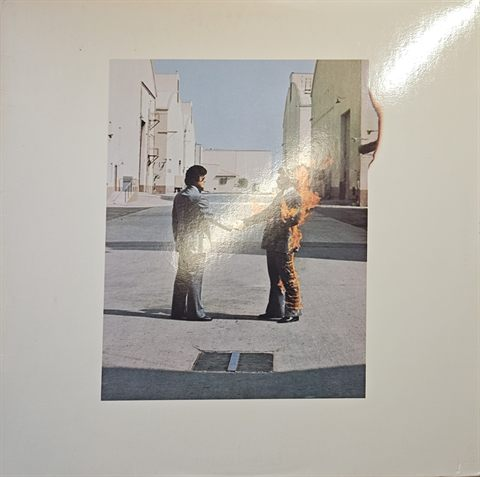
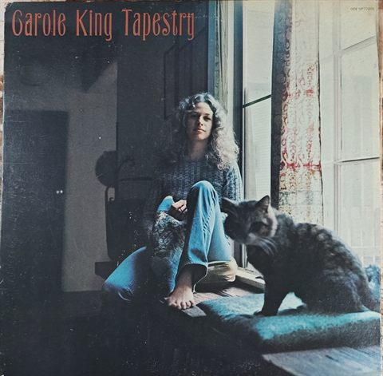
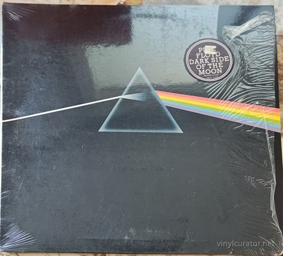

Sold from Archive
8 records that have found new homes · the record has gone, its documentation stays here.






Nothing matches that filter.
8 records that have found new homes · the record has gone, its documentation stays here.






Nothing matches that filter.